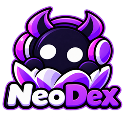
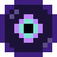

Niveau 1 : ton accueil
À chaque lancement, tu arrives chez toi : tes sites et tes applis en tuiles, devant un décor animé tiré au hasard.
- Tuiles rangées par groupes
- Agenda de la semaine
- Widgets : Pomodoro, note rapide, compte à rebours, météo

Accueil, navigateur et applis : un seul écran.
Tout ton PC dans une fenêtre en pixel art. Gratuit, sans publicité, sans compte.
INSERT COIN — NON, C'EST GRATUIT
↑ ↓ pour choisir · Entrée pour valider ·
NeoDex réunit dans une seule fenêtre ce que tu ouvres vingt fois par jour : ta page d'accueil, ton navigateur et tes applis.
Au lancement, tu arrives chez toi : tes sites en tuiles, ton agenda, tes widgets, devant un décor animé tiré au hasard. Un site ouvre un onglet, une appli s'ouvre à côté. Rien d'autre à lancer.
Et parce qu'un outil qu'on voit toute la journée a le droit d'être beau, tout est dessiné en pixel art, du curseur aux décors.
À chaque lancement, tu arrives chez toi : tes sites et tes applis en tuiles, devant un décor animé tiré au hasard.
Un vrai navigateur à onglets. Ctrl + K trouve tout : un onglet, un site, une appli, un réglage.
Une boutique où tout est gratuit. Un clic, c'est installé, et l'appli se pose sur ton accueil.
25 thèmes qui changent tout, pas seulement la couleur.
Pas de compte, pas de serveur NeoDex. Tes données restent sur ton PC.
Chaque appli est un plugin. Tu peux fabriquer le tien.

Chaque case est une appli de NeoStore. Clique pour ouvrir sa fiche.
| 1 | Applis et jeux dans NeoStore | 160 |
| 2 | Thèmes, chacun avec ses polices et son décor | 25 |
| 3 | Décors animés tirés au hasard | 20 |
| 4 | Publicités affichées | 0 |
| 5 | Comptes à créer | 0 |
| 6 | Données envoyées à un serveur NeoDex | 0 |
Trois niveaux, et tu y es.
NeoDex-Setup.exe.Windows 10 et 11 · gratuit ·
Toutes les applis et tous les jeux de NeoStore. Tout est gratuit : ils s'installent en un clic depuis NeoDex. Clique sur une appli pour voir sa fiche.
Chaque lancement de NeoDex tire un nouveau décor, dessiné en pixels, avec ses étoiles qui scintillent. Choisis-en un pour le voir.
Les dernières versions de NeoDex. Il se met à jour tout seul : un bandeau te le propose dès qu'une version sort.
Chargement…
Oui. NeoDex et toutes les applis de NeoStore sont gratuits, sans publicité.
Sur ton PC, dans le dossier %APPDATA%\NeoDex. Elles n'en sortent que si tu actives la synchro : elles passent alors par ton propre OneDrive, Google Drive ou Dropbox, chiffrées avec ton mot de passe. Chaque appli ne voit que ce que ses autorisations lui permettent.
Dans Windows : Paramètres › Applications › Applications installées › NeoDex › Désinstaller. Tes données restent dans %APPDATA%\NeoDex au cas où tu reviendrais ; supprime ce dossier pour tout effacer.
NeoDex est fait pour Windows 10 et 11. Une version Linux est en préparation : elle se construit et passe ses tests à chaque version, mais n'est pas encore proposée au téléchargement. Pas de version Mac. Une appli Android accompagne NeoDex pour retrouver tes raccourcis et ta musique. Dans NeoStore, chaque appli indique les systèmes où elle marche.
L'installateur n'a pas de certificat payant de Microsoft, alors Windows prévient par précaution. Clique sur « Informations complémentaires », puis « Exécuter quand même ». Les mises à jour, elles, sont signées et vérifiées par NeoDex avant d'être installées.
Les applis du catalogue officiel sont examinées puis signées : NeoDex refuse une archive modifiée. Une appli non vérifiée reste installable, mais NeoStore te prévient avant. Chaque appli dit ce qu'elle peut faire, et tu peux retirer une autorisation à tout moment.
Toutes seules : NeoDex vérifie s'il existe une nouvelle version et te propose de l'installer en un clic. Les applis de NeoStore se mettent à jour de la même façon.
Tout ce que NeoStore propose est un plugin : un dépôt GitHub que NeoDex sait trouver, télécharger et installer. Tu peux faire le tien.
Le Studio de plugins, dans NeoStore, crée de petites applis à partir de onze modèles : fiches de révision, routine du jour, quiz, compteurs, habitudes… Tu peux les partager par un code.
Un plugin, c'est un plugin.json, un index.js et une icône. NeoDex lui donne un contexte ctx : sa vue, ses données sauvegardées et synchronisées, et seulement les autorisations qu'il demande.
neodex-plugin : c'est ainsi que NeoStore le trouve.plugin.json (identité, version, autorisations et compatibility : les systèmes où il marche), index.js, icon.png en pixel art de préférence, locales/en.json pour la version anglaise, et un README en français et en anglais.<id>-<version>.zip : c'est le fichier que NeoStore télécharge.export default async function (ctx) {
ctx.view.textContent = 'Bonjour !';
const notes = (await ctx.folder.read('notes')) || {};
}Pas de cookie, pas de publicité, pas de mesure d'audience. Le site garde seulement, dans ton navigateur, ta langue et ton décor préférés.
Comme pour tout site, l'hébergeur (GitHub) reçoit ton adresse IP pour t'envoyer les pages. Pour afficher la dernière version de NeoDex, la page interroge aussi GitHub. La police d'écriture est servie par le site lui-même : rien ne part chez Google.
Pas de compte, pas de serveur NeoDex, pas de statistiques ni de télémétrie. Tes données restent sur ton PC, dans %APPDATA%\NeoDex.
La synchro ne s'allume que si tu la choisis, vers ton propre dossier cloud (OneDrive, Google Drive…). Avec un mot de passe, elle est chiffrée avant de partir.
NeoDex contacte seulement : GitHub (mises à jour, NeoStore, applis retirées), Ghostery (listes du bloqueur de pub), Open-Meteo (la météo de la ville que tu choisis), Have I Been Pwned (vérifier un mot de passe : seuls 5 caractères de son empreinte partent, jamais le mot de passe), Google Traduction (seulement quand tu traduis une page), Twitch (tes chaînes en direct), Cloudflare WARP ou Tor (seulement VPN allumé), et bien sûr les sites que tu ouvres.
En cas de plantage, rien n'est envoyé tout seul : NeoDex te propose d'ouvrir toi-même un rapport sur GitHub. Chaque appli de NeoStore déclare ses accès, et l'écran Autorisations montre les sites qu'elle joint.
Pour tout effacer, supprime le dossier %APPDATA%\NeoDex ou désinstalle NeoDex. Une question : écris sur GitHub.
Éditeur : Nolan Desumeur (NDesumeur), développeur indépendant, à titre non professionnel. Contact : GitHub.
Hébergeur : GitHub, Inc., 88 Colin P. Kelly Jr. Street, San Francisco, CA 94107, États-Unis — github.com.
NeoDex n'est lié ni à YouTube, ni à Discord, ni à Riot Games, ni à Twitch. Les noms et marques cités appartiennent à leurs propriétaires.